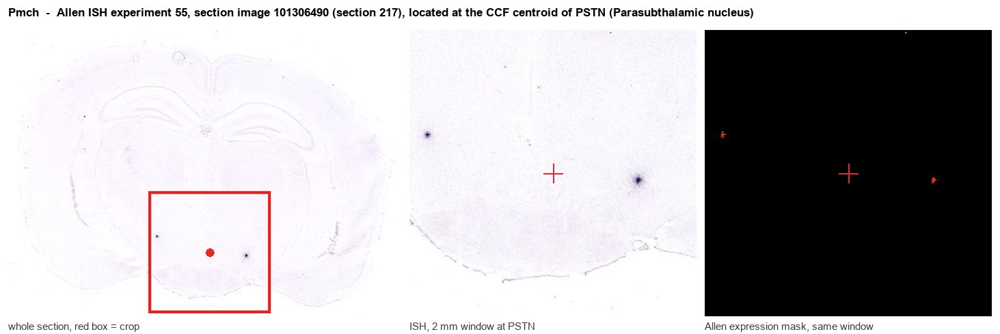

Pmch
Spatial tier: RESTRICTED · Class: OTHER · Top region: PSTN (Parasubthalamic nucleus) · Positive regions: 15/554
48.9Discovery Score
40.9Targetability Score
CEvidence grade C
What this means: Pmch: fine CCF profile is restricted toward PSTN (top regions: PSTN, TMv, LHA, STN, ME; 15 positive regions); direct spatial validation is still required.
Function in PSTN: evidence, prediction, innovation
- Gene function
- Pmch encodes pro-melanin-concentrating hormone, precursor of the 19-amino-acid cyclic peptide MCH plus NEI and NGE. MCH signals through the Gi/Go-coupled receptor MCHR1 (rodents lack functional MCHR2), inhibiting cAMP and mobilising Ca2+. It is made by a large lateral hypothalamic/zona incerta population and is a canonical orexigenic and REM-sleep-promoting peptide.
- Region function
- The parasubthalamic nucleus (PSTN) is a small nucleus at the lateral edge of the posterior hypothalamus whose Tac1- and CRH-expressing neurons are meal- and threat-activated and suppress appetite, delay feeding initiation and mediate fear-induced anorexia.
- Published in this region
- expression only No region-specific literature found for Pmch acting within PSTN. The closest anatomical result is Chometton et al. 2016, defining a premammillary lateral hypothalamic complex that contains PSTN and the calbindin nucleus embedded in MCH-rich posterior LHA territory and responds to palatable food. The two literatures run in parallel but have never been joined: PSTN-Tac1 neurons suppress appetite (Kim et al. 2022) and mediate fear-induced feeding suppression (Nagashima et al. 2022), while MCH neurons promote feeding, reward and REM sleep (Vetrivelan et al. 2016).
- Predicted function
- Prediction: MCH released by surrounding LHA/incerto-hypothalamic fibres acts on MCHR1 to provide Gi-mediated inhibition of anorexigenic PSTN-Tac1/CRH neurons, forming a local push-pull node where hunger-state MCH tone releases the PSTN brake on feeding. Intra-PSTN MCH or an MCHR1 agonist should increase intake and shorten latency to feed, whereas the MCHR1 antagonists SNAP-94847 or GW803430 delivered into PSTN should exaggerate meal-induced and fear-induced anorexia.
- Innovation
- ★★★☆☆ 3/5 Both MCH biology and PSTN feeding control are individually well developed with ready tools, so only the specific intersection is untested.
- Tools
- Pmch-Cre BAC and Pmch-CreER lines (note the Cre/Pmch dissociation reported by Beekly et al. 2020), Pmch-null mice, MCH antisera; MCHR1 antagonists SNAP-94847 and GW803430; MCHR1-knockout mice. For the target nucleus: Tac1-Cre and Crh-Cre PSTN drivers with Cre-dependent hM3Dq/hM4Di and caspase AAVs.
- References
Direct evidence located at the region

Allen ISH experiment 55, section image 101306490 (section 217): the section that contains the CCF centroid of Parasubthalamic nucleus according to the Allen image-to-atlas alignment (reference_to_image), with a 2 mm window around that point. Left: whole section, red box = window. Middle: ISH signal. Right: Allen's expression-mask view of the same window. open this image in the Allen viewer
Look it up yourself: Allen Mouse Brain ISH for PmchAllen reference atlas: PSTN (structure 364)ABC Atlas MERFISH viewer(in the ABC Atlas choose dataset MERFISH-C57BL6J-638850-CCF, colour cells by gene "Pmch" or by parcellation_substructure "PSTN")All genes confined to PSTN + 3-D brain
Direct spatial evidence
MERFISH REGION LOCATOR

Regional expression figure

Predicted WMB × fine-CCF profile; not direct full-transcriptome spatial measurement.
Spatial profile
Evidence and specificity
- Evidence status
- PREDICTED_FINE
- Direct sources
- None; predicted localization only
- Exclusive threshold
- 12 positive regions out of 554
- Spatial specificity
- 0.406
- Top-region fraction
- 0.087
- Filter status
- PASS
Interpretation limits
- Cell-type-to-region projection is imputed expression, not direct spatial measurement.
- Adult reference atlases do not establish stability across age, sex, strain, state, or disease.
- Transcript abundance does not guarantee protein abundance or genetic-tool performance.